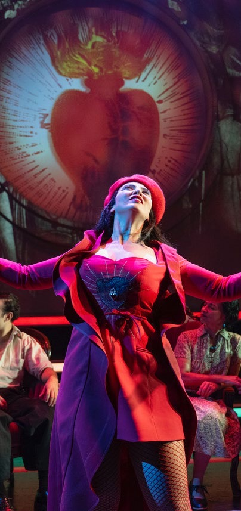
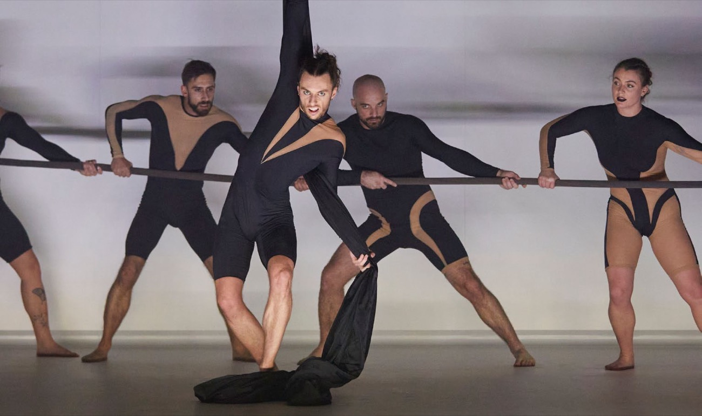
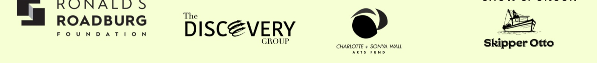
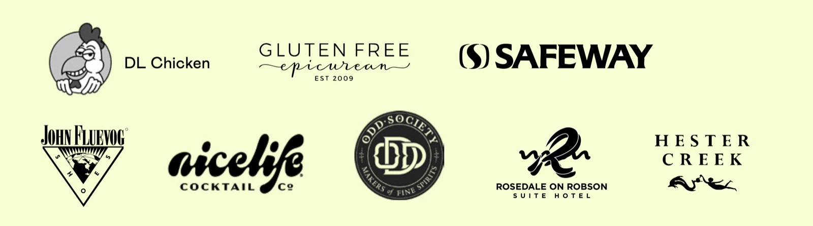

The Cultch’s 2025/26 Impact Report
Mission
Exceptional Art with Social Impact. We share extraordinary performing arts that spark conversation, foster inclusion, and strengthen community.
Vision
A vibrant, sustainable arts centre where creativity, community and artistic excellence thrive together.

A message from Heather and Nicole
Contemplating the impact The Cultch has had on the world this past year has led us to ask the question, “what would the world be like without The Cultch?” We realize that we could come up with a list of tangibles like tens of thousands of people would not have seen the Panto or that hundreds of youth would not have had their first opportunity to perform in front of an audience, however that is not what comes to mind.
Bars are positioned by run dates, Oct 2025 – Jun 2026. Select a bar for details.
No productions match that combination.

Cultch Connects organizations
No organization by that name.
Beyond
the stage
“You’re building and maintaining community, bringing joy and challenging us all with new perspectives. The inclusive nature of The Cultch, and the distinct lack of ‘arts snobbery’ are wonderful.”
Funders &
Sponsors
Total revenue 2025/26
Roadburg Foundation · Panto Partner · Warrior Festival · On Native Land show sponsor

Design & media sponsors
In-kind sponsors

“Giving artists a place to speak, and the public a place to listen, to reflect, and sometimes even join in and participate, is vital.”
No listed donor by that name.
In honour of & in memory of